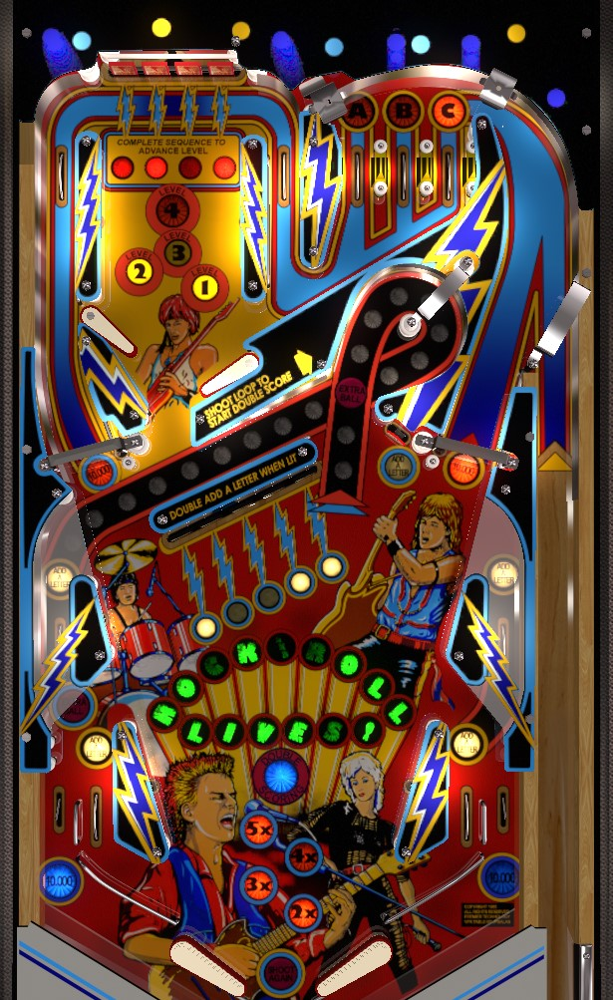

Rock Encore is the same game as Rock but with some different artwork and music. Rules and scoring are identical.
Shoot lit spinners all day for 10,000 a spin. Use this game to practice shatz/alley passing or tap passing to transfer the ball to the flipper that can shoot a lit spinner, because post transfers are largely unviable. Bonus advances come from lit in lanes, side lanes, or lower drop targets; max out the base bonus to instantly collect it and light extra ball at the center turnaround loop. Turnaround loop also lights double scoring for 8 seconds, which is a good thing to do to a spinner. Complete the upper playfield drops in order 4 times to score special. No scoring is nearly as meaningful as lit spinners, though.
Roll through a lit top lane to unlight it. Lit top lanes score 10,000 points; unlit top lanes score 1,000. Lane change is available on the right flipper only to rotate which lanes are lit. Unlighting all 3 top lanes resets the lanes and increases the bonus multiplier by 1x toward its maximum of 5x. ABC lanes also reset when the ball drains.
Both spinner lanes eventually lead to the upper playfield, which has its own two (misaligned) flippers. The goal up here is to hit flashing drop targets; hit a flashing target to move the flashing light one position to the right. If the flashing light is in front of a target that is down, you must complete the entire bank to reset it so you can hit the flashing target. Hitting the rightmost target when flashing instantly resets the target bank and advances the lit scoring level. Flashing drop targets score 5,000 points times the lit scoring level, for a maximum of 20,000 points. All other upper drop targets score 1,000 points. Advancing the lit scoring level past 4 scores an instant special, worth 500,000 points in competition/novelty play, and resets the scoring level to 1.
When the ball drains, the current scoring level is kept from ball to ball, but the drop targets reset and the flashing light is returned to the leftmost target. However, if the ball drains when the scoring level is 4, it will be reset back to 1.
The loop shot in the center of the table starts 2x playfield scoring for 8 seconds. The loop can be shot from either flipper. The loop shot should roll down the lane above the lower drop targets and feed the middle left side lane, which (with the possible required help of some nudging) feeds the left in lane and left flipper.
After maxing out the bonus with 15 advances, a full shot to the loop that makes the middle left side lane will score an extra ball (worth 500,000 points in competition/novelty play) in addition to the 8 second of 2x playfield scoring.
Lit spinners score 10,000 points per spin. Unlit spinners score 1,000 per spin. One of the two spinners is always lit, alternating each time a lower slingshot or an upper playfield side wall is hit. Lit spinners utterly dominate this game's scoring, and are the only thing to consistently shoot for. Get the ball to the flipper opposite the lit spinner and hit it is hard as you can. Since the slingshots on Rock are horizontally narrow and set back from the flippers, post transfers are not very viable, so the best ways to transfer the ball are alley/shatz passes or tap pass. Additionally, if the ball is on the right flipper and the right spinner is lit, an alternate option is to backhand the loop shot to start 2x playfield, then when the ball follows the loop shot's path through the left in lane, hit the lit right spinner at speed for 20,000 points per spin.
Beware of the possibility of the spinner changing value while it is still spinning, such as if a shot to the left spinner hits one of the side walls in the upper playfield before the spinner itself stops moving.
Unlit drop targets score 1,000 points. Lit drop targets score 10,000 points and 2 bonus advances. The position of the lit target changes automatically every couple seconds. Completing the bank scores 10,000 points and instantly resets the bank.
Middle side lanes and in lanes start out lit. Lit lanes score 5,000 points and a bonus advance; unlit lanes score 1,000 points. Making a lit lane unlights it. Slingshots and upper playfield wall switches alternate which side's middle lanes and in lanes are lit. Unlighting all 4 side lanes and in lanes will light the Reset target in between the loop shot and the right spinner; hitting this target when lit relights all 4 side lanes and in lanes so their bonus advances can be collected again. As mentioned above, each lit drop target also gives 2 bonus advances.
Making 15 total bonus advances to spell R-O-C-K-AND-R-O-L-L-L-I-V-E-S-! triggers an instant bonus collect. Each letter scores 10,000 points times the current bonus multiplier, for a maximum collect of 5x 150,000 = 750,000 points. Letters (bonus advances) are carried from ball to ball, and only reset when all letters are lit. Bonus multipliers also carry over from ball to ball.
Rock has a conventional in/out lane setup. In lanes score 1,000 points or 5,000 and a bonus advance when lit. Out lanes score 1,000 points or 10,000 when lit. The divider between in and out lane is much lower than most games of the era because the side lanes feed the in lanes directly behind the slingshots. Slingshots are smaller and narrower than on most games, so post transferring is not really an option for ball control.
In competition/novelty play, extra balls and specials score 500,000 points.
The upper playfield can be set to revert the scoring level back to 1 on every ball, no matter what it was advanced to.
The bonus can be set to not collect automatically when it is maxed out at 15 advances. In this case, the end of ball bonus will be a full collect, and the bonus advance letters will reset for the start of the next ball.